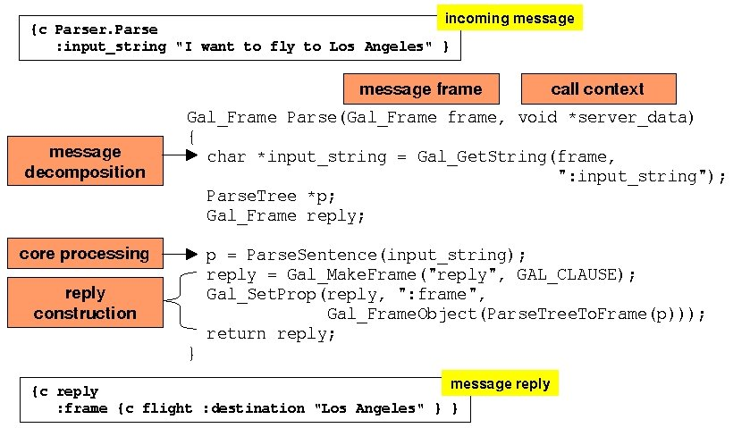
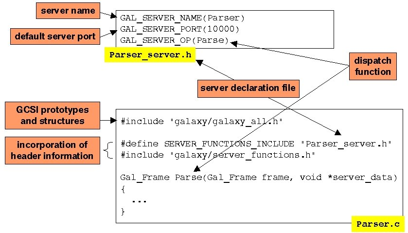

Galaxy Communicator Tutorial:
Server Basics
In this lesson, we'll learn how to build the simplest of servers: one which
receives a message from the Hub and returns a reply. In later lessons, we'll
study successively more complex types of servers. All our examples will be
drawn from the toy travel system we've already used.
You can consult the complete server reference
when you need to.
How complex can a server
get?
We can divide the seven servers in the toy travel demo into four groups,
in order of complexity.
Parser, generator, backend
These three servers all exhibit the simplest functionality possible: they
receive a message and send back a response. We will use the Parser server
as our example in this exercise.
Dialogue
The Dialogue server is slightly more complex. Instead of simply responding
to messages, the Dialogue server sends new messages to the Hub, and at times
waits for the response. We'll turn to this server after we learn a little
about the Hub scripting language.
Recognizer, synthesizer
These servers, in addition to responding to messages, also communicate with
the Audio server using the brokering backchannel. We'll learn about brokering
in the context of these two servers.
Audio
Finally, in addition to responding to messages and communicating with the
Recognizer and Synthesizer servers using brokering, the Audio server serves
as a UI element, which needs to monitor an I/O device in addition to its
connections to the Hub. We'll study this server last.
Six steps to building a
server
There are four basic steps to building a Communicator-compliant server.
- Step 1: Set up your headers
- Step 2: Write your dispatch functions
- Step 3: Write your server initialization function
- Step 4: Write and incorporate your server declarations
- Step 5: Write your Makefile and compile
- Step 6: Write your documentation
Step 1: Set up your headers
This step is simple. All the public Communicator header files can be loaded
from $GC_HOME/include/galaxy/galaxy_all.h. For historical reasons
having to do with the way the Galaxy Communicator Makefile template is written,
we usually include the header file as follows, and we recommend you do the
same:
#include "galaxy/galaxy_all.h"
Step 2: Write your
dispatch functions
All dispatch functions have the same function signature. Let's use the Parse
dispatch function as an example.
Gal_Frame Parse(Gal_Frame frame, void *server_data);
The frame in the argument list is the incoming message frame. The
server_data is actually a structure encapsulating the environment
of the dispatch function invocation. We'll talk about this argument more
when we talk about error handling;
for now, you can ignore it.
There are three basic regions in each dispatch function:
- message decomposition and type checking
- core processing
- reply construction
Dispatch functions have the additional complexities of message decomposition,
type checking and reply construction because our messages are in the form
of sets of key-value pairs rather than ordered sequences of typed elements
(as in a C message signature). So the dispatch function code needs to do
some of the work that a compiler might do in other circumstances. In this
current discussion, we're going to cover message decomposition and reply
construction; we'll ignore type checking for the moment, because it relates
to the server_data argument.
For example, the core processing in the Parser server is a call to the
function ParseSentence:
ParseTree *ParseSentence(char *input_string);
This function takes a string and produces an element of type ParseTree
*, which must be somehow translated into something which can be included
in a reply frame. We choose to translate it into a Gal_Frame. Here's a simplified
illustration of the wrapped function:

Let's take a closer look at each of these regions.
Message decomposition
We need to pass a string to the ParseSentence function, and that
string is stored in the incoming message in the :input_string key.
We extract it using one of the tools from our last lesson:
char *input_string = Gal_GetString(frame, ":input_string");
Core processing
Now that we have the string, we can parse the sentence:
p = ParseSentence(input_string);
Reply construction
Now we need to create a reply message frame, convert the tree to a frame,
wrap a Gal_Object around the frame, and insert it into the reply message
frame. The name of the reply message doesn't matter, since the reply is returned
with all the appropriate information about what it's a reply to.
reply = Gal_MakeFrame("reply", GAL_CLAUSE);
Gal_SetProp(reply, ":frame",
Gal_FrameObject(ParseTreeToFrame(p)));
return reply;
The infrastructure takes care of freeing both the input and reply frames
after the dispatch function is processed. It's perfectly legal for these
frames to be the same; so our simplified function might have looked like
this:
Gal_Frame Parse(Gal_Frame frame, void *server_data)
{
char *input_string = Gal_GetString(frame, ":input_string");
ParseTree *p;
p = ParseSentence(input_string);
Gal_SetProp(frame, ":frame",
Gal_FrameObject(ParseTreeToFrame(p)));
return frame;
}
In this circumstance, all you need to remember is that all the keys in the
incoming message will also be in the reply (unless you overwrite them when
you construct the reply).
The reinitialize dispatch function
One of the dispatch functions you can define is reinitialize. As
we discussed in the lesson on how the infrastructure
works, this dispatch function is called whenever the the Hub and server
establish a connection. It can also be called explicitly, like any other
dispatch function. The only difference between the two calling contexts is
that when the Hub and server establish a connection, the value returned from
reinitialize is ignored.
The Parser server does not define the reinitialize dispatch function.
Step
3: Write your server initialization function
The next step is to write your server initialization function. This step
is optional; the infrastructure will skip this processing step if the developer
doesn't specify it. The function is called _GalSS_init_server:
void *_GalSS_init_server(GalIO_ServerStruct *server, int argc,
char **argv);
This function is called once, when the server starts up. You can use this
function to load grammars or other models, or otherwise initialize the server
state. In the toy travel demo, all the servers must load the message script,
so we do that in the server initialization function. This function uses Galaxy
Communicator library functions to parse the argument
list and report the result;
we won't be discussing these functions in the tutorial.
void *_GalSS_init_server(GalIO_ServerStruct *server, int argc,
char **argv)
{
char *data_file = (char *) NULL;
if (GalUtil_OACheckUsage(argc, argv, oas, NULL) == 0)
exit(1);
if (GalUtil_OAExtract(argc, argv, oas, "-parser_data",
GAL_OA_STRING, &data_file) == 0) {
GalUtil_Warn("No -parser_data argument. Exiting.");
exit(1);
}
InitializeParser(data_file);
return (void *) NULL;
}
Without going into the details, this function expects the Parser server
to be called as follows:
% Parser -parser_data <file>
The initialization function will pass the string specified by <file>
to the function InitializeParser, which in the toy travel demo simply
loads the message script.
Step
4: Write and incorporate your server declarations
The next step is to create and incorporate a header file called a server
declaration file. This file contains macros which specify, among other things,
- a name for the server (which in most cases doesn't have to be the name
that the Hub knows it as)
- a default port for the listener the server sets up when it listens
for connections
- the available dispatch functions
The complete list of specifications you can make in your server declaration
file can be found in the full server reference.
We'll continue to use the Parser server as an example. First, we'll create
the server declarations file and name it Parser_server.h. It looks
like this:
GAL_SERVER_NAME(Parser)
GAL_SERVER_PORT(10000)
GAL_SERVER_OP(Parse)
These declarations announce that the server knows its name to be Parser
(GAL_SERVER_NAME), that its default listener port is 10000 (GAL_SERVER_PORT),
and that if the server receives a message whose name is Parse, it
should invoke the function with the same name. All dispatch functions must
be registered in this way, including reinitialize; otherwise, the
infrastructure has no way of knowing that the function is available.
Second, we'll tell the server about the server declaration file. You can
do this using the following idiom:
#define SERVER_FUNCTIONS_INCLUDE "Parser_server.h"
#include "galaxy/server_functions.h"
The #define declares the name of the server declaration file, and
the #include causes the server declaration file to be loaded and
the macros expanded in the appropriate way.
The following picture illustrates all the dependencies involved in the
server declarations:

Step 5: Write
your Makefile and compile
The next step is to construct a Makefile to compile your server. The Galaxy
Communicator infrastructure provides a sophisticated Makefile template to
use to compile Communicator-compliant servers. Here's a simplified version
of the Parser server Makefile:
# Specify the name of the Makefile.
MAKEFILE = Parser.make
# Specify the location of the Communicator distribution.
ROOT_DIR = $(GC_HOME)
MITRE_ROOTDIR = $(ROOT_DIR)/contrib/MITRE
TEMPLATES = $(ROOT_DIR)/templates
# The file archos.make contains information about OS and platform.
include $(TEMPLATES)/archos.make
# The name of the server executable that you want to compile.
SERVER = Parser
# Put the executable in EXECDIR (if you don't specify it,
# the executable will go in the default Galaxy Communicator
# bin directory, inside the distribution)
EXECDIR = bin/
# List all your source .c files.
SOURCES = Parser.c component_engine.c
# Include the Galaxy Communicator template.
include $(TEMPLATES)/rules.make
# Include automatically generated source dependency file.
ifneq ($(findstring clean,$(MAKECMDGOALS)),clean)
include $(MAKEFILE).depend
endif
The full set of configuration possibilities for the templates can be found
in the full server
reference. It's also fairly straightforward to use your own Makefiles, but
you'll lose some of the built-in transparency of managing multiple platforms
that the Galaxy Communicator templates provide.
Step 6: Write your documentation
Finally, we encourage you to document the message set your server supports.
We've developed a fairly simple HTML template, which we exemplify using
the Parser server.
Summary
In this lesson, we've described the levels of complexity that servers can
reach, and we've exemplified a six-step process for constructing a server
using the least complex type of server. In the next lesson, you'll learn
about a tool called the unit tester which we'll use to understand
better how all these types of servers work.
Next: Our second
tool: the unit tester
Last updated June 24, 2002